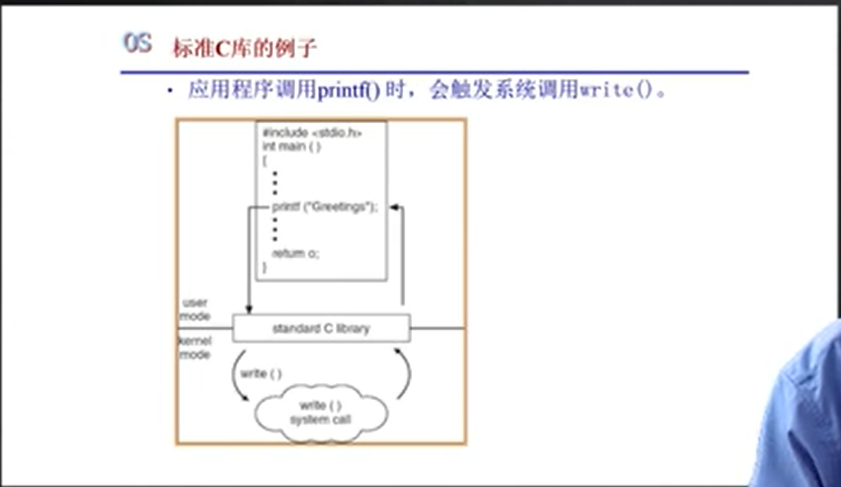

中断、异常和系统调用处理机制
中断
硬件设置中断标记【CPU初始化 】
- 将内部、外部事件设置中断标记
- 中断事件的ID
发生异常时，记录异常编号+对应地址
软件（OS）
- 保存当前处理状态
- 中断服务处理程序
- 清除中断标记
- 恢复之前保存的处理状态
异常
硬件：创建异常ID
OS:
系统调用

程序访问主要是通过高层次的API接口，而不是直接进行系统调用
- 通常情况下，与每个系统调用相关的序号
- 系统调用接口调用内核态中预期的系统调用
- 用户不需要知道系统调用是如何实现的
- 只需要了解API和了解操作系统将什么作为返回结果
- 操作系统接口的细节大部分都隐藏在API中
- 通过运行程序支持的库来管理（用包含编译器的库来创建函数集）
状态转换
用户态
应用程序在执行的过程中cpu处于的一个特权级的状态，优先级特别低，
只能受限的访问内存，且不允许访问外围设备，占用cpu的能力被剥夺，cpu资源可以被其他程序获取。
内核态
cpu可以访问内存的所有数据，包括外围设备，例如硬盘，网卡，cpu也可以将自己从一个程序切换到另一个程序。
状态转换
应用程序直接或间接访问系统的系统调用接口
触发从用户态转换到内核态，使得控制权从app到OS
状态转换是有代价的，成本比函数调用高很多，这也是操作系统为了安全而付出的代价
代价小结
跨越操作系统边界的开销
- 在执行时间的开销上超过程序调用
- 开销：
- 建立中断/异常/系统调用与对应服务
例程映射关系和初始化开销
- 建立内核堆栈
- 验证参数
- 内核态映射到用户态的地址空间，更新页面映射权限
- 内核态独立地址空间 TLB